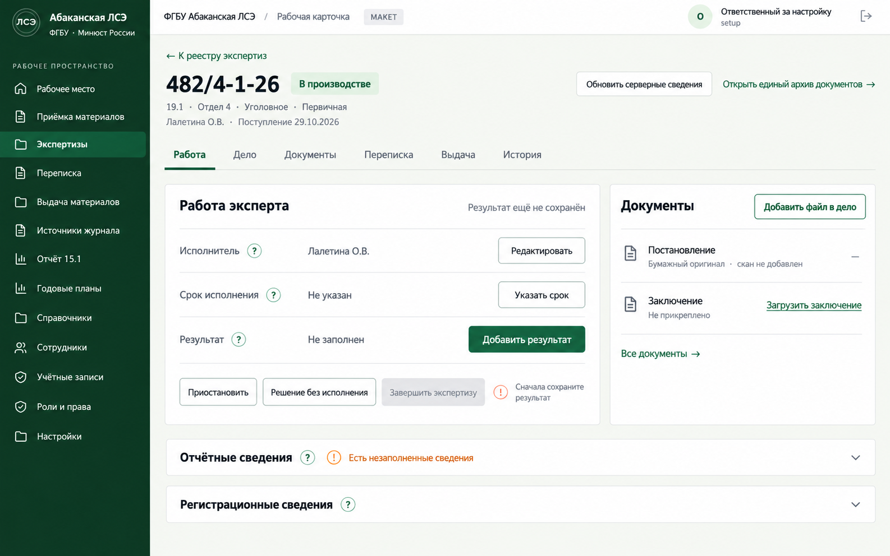
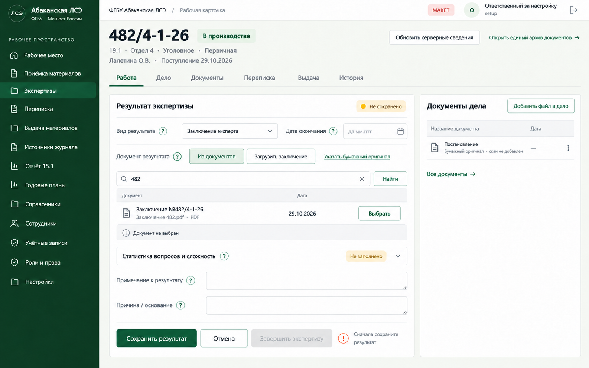
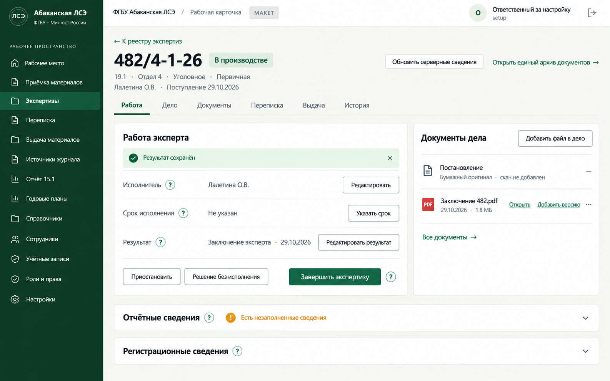
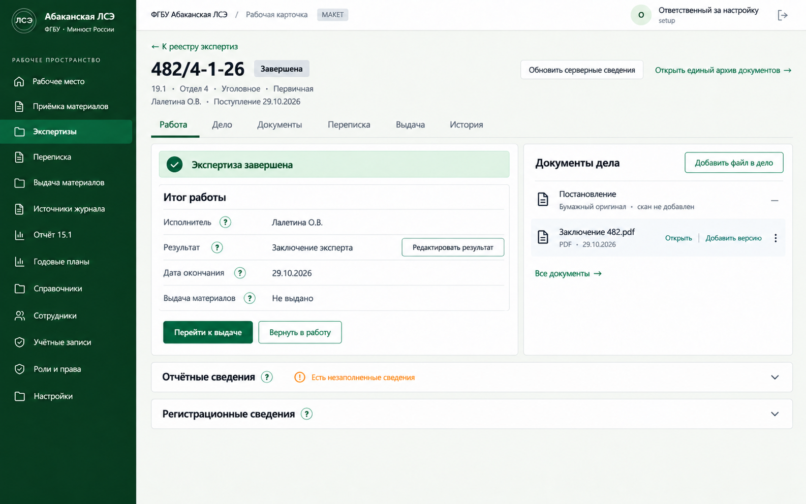
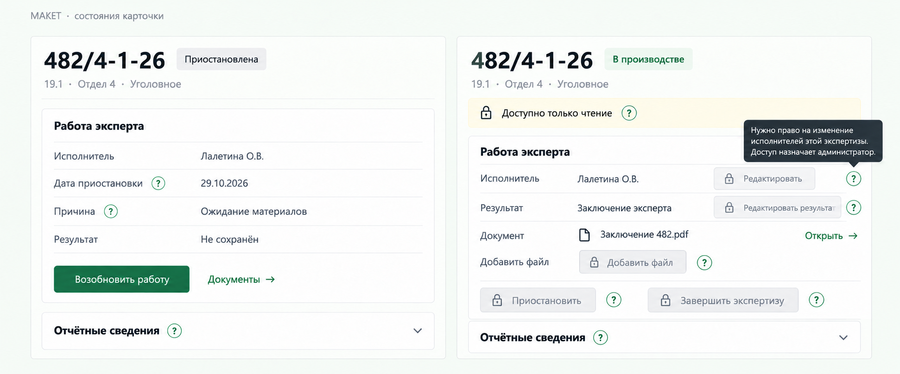

01
Полный размер ↗Работа эксперта
Исполнитель, срок, результат и документы в одном месте. Незавершённые отчётные сведения видны в свёрнутом блоке.

02
Полный размер ↗Выбор документа и результат
Показан список найденных документов. Загрузка заключения и добавление файла в дело названы по-разному. Сохранение результата отделено от завершения.

03
Полный размер ↗Результат сохранён
Экспертиза ещё в производстве. Следующее доступное действие — завершение; документ можно открыть или дополнить новой версией.

04
Полный размер ↗Экспертиза завершена
Выдача материалов учитывается отдельно. Возврат в работу и редактирование результата зависят от действующих прав.

05
Полный размер ↗Приостановка и отсутствие прав
Недоступные действия остаются видимыми. Кнопки выполнения выключены, а отдельный «?» доступен и объясняет недостающее право.
